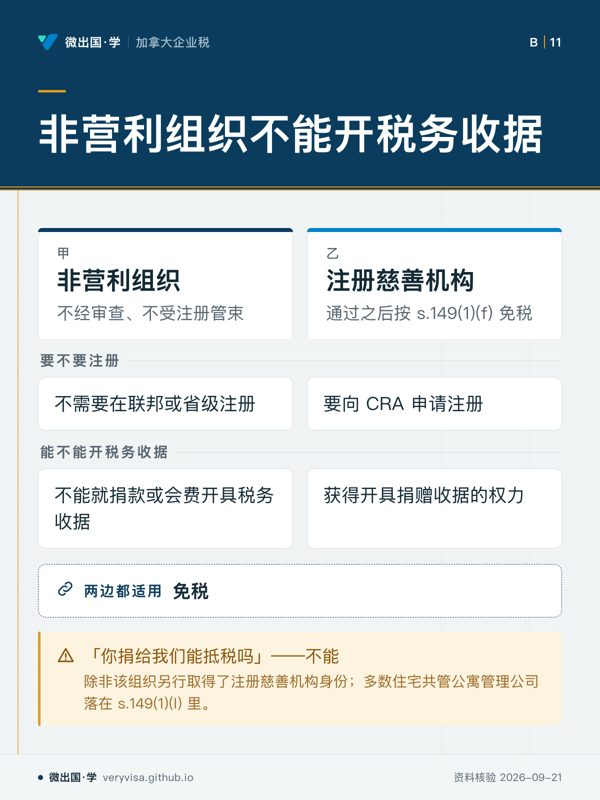
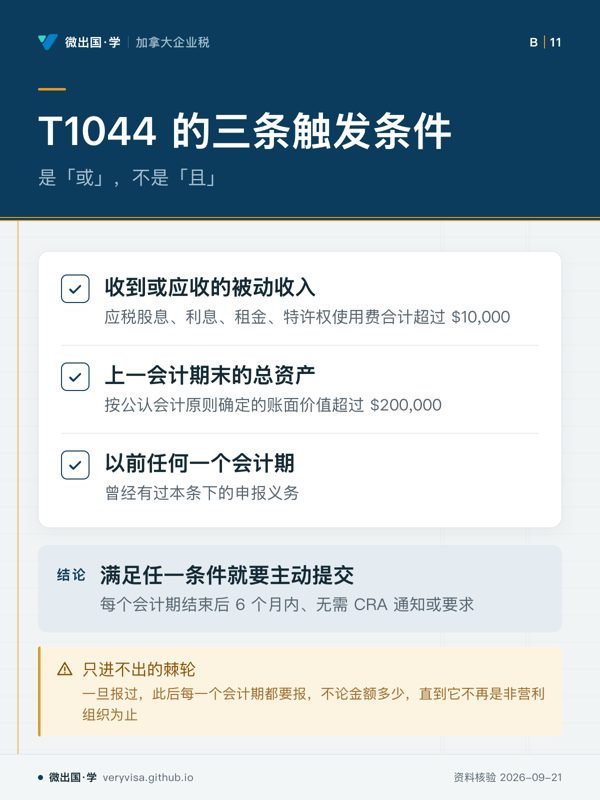
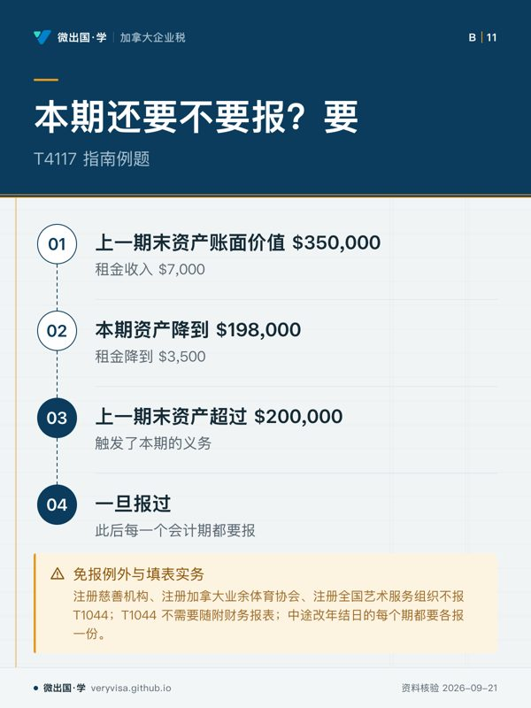

🃏 Flashcards · 3 闪卡 · 3 张 🖼 Slides · 4 幻灯 · 4 页 ✍️ Questions · 7 刷题 · 7 道
公司税 T2 Corporate tax (T2) P3 过一遍 P3 Skim
ZH EN ZH + EN
先看这一章怎么考 First, how this chapter is tested
身份辨析题：给出一个社区社团、共管公寓管理公司或同乡会的章程与实际运作情况，要求判断其是否符合 ITA s.149(1)(l) 的四个要件、能否开具捐款收据，以及与注册慈善机构（registered charity）在 T2 申报义务上的相反待遇。 Status identification question: gives the by-laws and actual operation of a community society, a condominium management corporation or a hometown association, and asks whether it meets the four requirements of ITA s.149(1)(l), whether it can issue donation receipts, and how its T2 filing obligation is the opposite of that of a registered charity. T1044 触发条件判定题：列出组织的会费、政府拨款、利息、租金及连续两期的期末资产账面价值，测试考生能否只加总四项被动收入与 $10,000 比较、用「上一期末」总资产与 $200,000 比较，或识别「曾经报过即永久要报」的棘轮规则（ratchet rule）。 T1044 trigger question: lists the organization's membership fees, government grants, interest, rent and the year-end book values of its assets for two consecutive periods, and tests whether the candidate can add up only the four passive income items against $10,000, compare total assets at the end of the prior period against $200,000, or recognize the ratchet rule ('once required, always required'). 会所视同信托分流题：针对高尔夫球会、游艇会或会员制餐会，考核 s.149(5) 视同生前信托（deemed inter vivos trust）下哪些所得继续免税（会费与餐饮收入）、哪些所得必须改报 T3 课税（财产收入及未用于提供餐饮/娱乐/体育服务的财产资本利得）。 Club deemed trust split question: for a golf club, yacht club or membership dining club, tests which income stays exempt under the s.149(5) deemed inter vivos trust (membership fees and dining income) and which must be reported and taxed on a T3 (property income and capital gains on property not used to provide dining, recreational or sporting services). 最常丢分的陷阱（看到题干信号就警觉） Traps that cost the most marks (watch for the signal in the stem)
零税免报 T2 陷阱 Skipping the T2 because there is no tax 题干出现 incorporated non-profit organization、condominium corporation 或 zero tax payable，且询问是否需要每年提交 T2。 The question has an incorporated non-profit organization, a condominium corporation or zero tax payable and asks whether a T2 must be filed every year. T1044 收入混算与当期资产陷阱 Mixing income for T1044 and using current-period assets 题干同时给出会员费/拨款与利息/租金，或同时列出上一期末与本期期末两个资产数字。 The question lists both membership fees or grants and interest or rent, or lists the asset figures for both the end of the prior period and the end of the current period. 棘轮可逆陷阱 Assuming the ratchet can be reversed 题干提到该组织在往年曾因资产或被动收入达标提交过 T1044，而本年度资产与收入均大幅萎缩。 The question says the organization filed a T1044 in earlier years because its assets or passive income met the thresholds, while this year its assets and income have shrunk sharply. 本章考点页：导图、要点表、7 道带逐项解析的练习 →
核实日期：2026-09-07｜现行口径：2026 税年（会计期落在 2026 年的组织）｜复核：2027-06-30（本页多数判据是长青机制，变化最快的是省级薪酬税那一格）
法条依据指向《所得税法》(Income Tax Act, ITA) 现行合订本（Act current to 2026-06-21）；数值指向加拿大税务局 (Canada Revenue Agency, CRA) 与卑诗省财政厅的现行页面。
一栋楼的业主委员会、一个华人同乡会、一家社区体育俱乐部、一间会员制餐会——这些组织都不以营利为目的，都以为自己「不用报税」。它们中的大多数确实一分钱所得税都不用交，但免税与免申报是两件完全不同的事 ，而这两件事之间的落差，是这一格里最常见、也最不必要的罚单来源：一份迟交的信息申报表，最高可以罚到 $2,500，而这份表本身填完可能只要半小时，且不需要附财务报表。
这一页帮你判断一个组织是不是《所得税法》第 149(1)(l) 条意义上的非营利组织，用三条并列条件判断它今年要不要交 T1044，也看清一个以提供餐饮或体育设施为主要目的的会所，为什么投资收益要另报 T3。
一、制度设计与底层逻辑：免税是给「目的」的，不是给「名字」的 本节回答 This section answers 非营利组织四要件、禁开收据与三种错报后果 The four requirements for a non-profit organization, the ban on issuing receipts and the consequences of three kinds of errors 本章考题 1 Question 1
1.1 法条只有一句话，但里面有四个要件
ITA s.149(1)(l) 的原文说：一个俱乐部、社团或协会，在部长看来不属于 s.149.1(1) 定义的慈善机构，且专为 社会福利、公民改善、娱乐消遣或任何非营利目的而组织并运营 ，其收入的任何部分都不得支付给任何业主、成员或股东，或以其他方式可供他们个人受益——除非该业主、成员或股东本身是一个以推广加拿大业余体育为主要目的与功能的俱乐部、社团或协会（加拿大联邦法规库 ）。
拆开是四个要件，缺一不可：
不是慈善机构。 这是排他的，不是并列的。慈善机构走 s.149(1)(f)，非营利组织走 s.149(1)(l)，一个主体不能同时是两者。
目的必须是非营利的。 法条给了三类具名目的（社会福利、公民改善、娱乐消遣）加一个兜底（任何非营利目的）。
「组织并运营」是两个动词。 章程写得再漂亮，实际运营中开始为盈利而经营，免税身份就会被质疑。判定是逐年的事实判断 ，不是一次性的资格认定。
收入不得为成员个人利益可用。 注意用词是「可供……个人受益」(available for the personal benefit)，比「实际支付」宽得多——只要制度上存在这种可能性，就可能落入禁止范围。唯一的例外是成员本身是推广业余体育的组织。
1.2 不需要注册，也不能开收据——同一件事的两面
CRA 在 T4117 指南里把非营利组织与注册慈善机构的分野写成两句话（CRA ）：非营利组织不需要在联邦或省级注册就能取得免税身份；非营利组织不能就捐款或会费开具税务收据。
这两句必须一起读。慈善机构要向 CRA 申请注册，通过之后按 s.149(1)(f) 免税，并获得开具捐赠收据的权力 ——那是它接受审查换来的对价。非营利组织不经审查、不受注册管束，代价就是它给不了捐赠人任何税务好处。所以「我们是非营利的，你捐给我们能抵税吗」这个问题，标准答案是不能 ，除非该组织另行取得了注册慈善机构身份。
指南另有一句判据宽度极大：多数住宅共管公寓管理公司（condominium corporation）落在 s.149(1)(l) 里 ，因为它们通常为非营利目的运营（CRA ）。这一句让本页覆盖到全加拿大数以万计的业主委员会。
1.3 谁与谁在博弈
组织想要的是「免税又不用交表」；CRA 想要的是在不征税的前提下仍能看见钱的流向 。所以立法的解法不是让免税主体消失在系统外，而是把它的义务从「交税」换成「交信息」。理解了这个交换，后面所有的申报义务就都顺理成章了：你不交钱，就得交数据。
1.4 错报的三个法律后果
T1044 迟报或不报 ：基本罚 $25／日，最低 $100、最高 $2,500，每次未申报各算一次 （CRA ）。因不可抗力迟报的可申请豁免，随表附信说明理由。
T2 迟报 ：与营利公司同条，s.162(1) 的 5% ＋ 每整月 1%（最多 12 个月），重犯按 s.162(2) 的 10% ＋ 每整月 2%（最多 20 个月）（CRA ）。罚的基数是「期限时未付的税」 ——一个真正零税的免税组织迟报 T2，罚款算出来是零。但这不是可以不报的理由：一旦当年被判定丧失免税身份、产生了税，那笔罚就有了基数，而且是从原始期限起算的。
免税身份被否 ：这是最重的一种。事实判断显示组织实际上为盈利而运营，或收入曾可供成员个人受益，CRA 可以在正常复评期内追溯认定该年度不免税，该年的全部所得按普通公司税率课税，加上按规定利率逐日复利的利息（CRA ）。
节末检索小测 · 先别往回翻，凭记忆作答 Quick recall check: answer from memory before scrolling back
A cultural association is organized and operated for non-profit purposes, is not a registered charity, and wants to distribute part of its annual surplus to a member entity. Under ITA s.149(1)(l), in which single situation may income be made available to a member without disqualifying the association's tax-exempt status?
一家文化协会专为非营利目的组织并运营，并非注册慈善机构，现拟将其年度盈余的一部分分配给某个成员主体。根据 ITA s.149(1)(l)，在下列唯一哪种情形下，收入可供成员受益而不会导致该协会丧失免税身份？
a When the member is an individual director who receives the payment as a below-market personal loan rather than cash ✗ 法条禁止收入「可供成员个人受益」（available for the personal benefit of any member），低于市价的服务或无息个人借款同样属于让个人成员受益，会导致丧失非营利组织（non-profit organization, NPO）免税身份。 The statute forbids income being 'available for the personal benefit of any member', and services below market or an interest-free personal loan likewise benefit an individual member and cause the loss of the non-profit organization (NPO) exemption.
b When the member is itself a club or association whose main purpose is promoting amateur athletics in Canada ✓ 根据 ITA s.149(1)(l)，非营利组织（non-profit organization, NPO）的收入不得支付给任何业主、成员或股东或供其个人受益，唯一的法定例外是该业主、成员或股东本身是以推广加拿大业余体育（promotion of amateur athletics in Canada）为主要目的与功能的俱乐部、社团或协会。 Correct. Under ITA s.149(1)(l), the income of a non-profit organization (NPO) may not be payable to or available for the personal benefit of any proprietor, member or shareholder; the only statutory exception is where that proprietor, member or shareholder is itself a club, society or association whose main purpose and function is the promotion of amateur athletics in Canada.
c When the association is a residential condominium corporation that returns its reserve fund interest to unit owners ✗ 住宅共管公寓管理公司（condominium corporation）虽通常落入 s.149(1)(l)，但同样必须遵守收入不得供业主个人受益（personal benefit of any member）的限制，把储备金利息分给业主个人并不属于法定例外。 A residential condominium management corporation usually falls under s.149(1)(l) but must equally comply with the limit that income not be available for the personal benefit of any member; returning the reserve fund interest to individual unit owners is not a statutory exception.
d When the association registers with the CRA first and issues an official donation receipt to offset the distribution ✗ 非营利组织不需要向 CRA 注册即可免税，且不能开具捐赠收据（official donation receipts）；此外，没有任何通过开收据抵销盈余分配的机制。 A non-profit organization does not need to register with the CRA to be exempt and cannot issue official donation receipts; also, there is no mechanism to offset a distribution of surplus by issuing a receipt.
看答案与每个选项的解析 Show the answer and why each option is right or wrong 答案 Answer ：b
二、2026 税年现行规则与数字 本节回答 This section answers T2、T1044 与 T3 的触发门槛、期限及棘轮机制 The trigger thresholds, deadlines and ratchet mechanism for the T2, T1044 and T3 本章考题 2 Question 2 本章考题 3 Question 3
2.1 三份表，三套判据，互不替代
图：T2 与 T1044——谁要报、期限、迟报后果
T2 那一行是本页最反直觉的一条。 CRA 的原话是：所有公司——包括非营利组织、免税公司和零活动公司——每个税年都要报 T2，哪怕一分钱税都不用交；例外只有三类，免税的王室公司、Hutterite 群体，以及全年都是注册慈善机构的公司（CRA ）。也就是说，「注册慈善机构」是免报 T2 的，而「非营利组织」不是 ——两者在这一格的待遇正好相反。T4117 指南也确认了这一点：作为公司的非营利组织通常仍要报 T2 或 T2 简表（CRA ）。
注意这三份表的判据是三套不同的东西：T2 看的是你是不是公司 ；T1044 看的是你的被动收入与资产规模 ；T3 看的是你的主要目的是什么 。一个组织可能只报 T2，也可能 T2 与 T1044 都报，也可能只报 T3。
2.2 T1044 的三条触发条件：是「或」，不是「且」
ITA s.149(12) 规定，因 s.149(1)(e)（农业组织、贸易委员会、商会）或 s.149(1)(l)（非营利组织）而免税的主体，若满足以下任一条件，就要在每个会计期结束后 6 个月内、无需 CRA 通知或要求 ，主动提交信息申报表（加拿大联邦法规库 ）：
条件一 · 被动收入门槛。 该期内收到或应收的应税股息、利息、租金、特许权使用费合计超过 $10,000 。注意四项是合计，不是各自；也注意是「收到或应收」，权责发生制的应收也算。
条件二 · 资产门槛。 上一 会计期末的总资产（按公认会计原则确定的账面价值）超过 $200,000 。这一条看的是上一期，不是本期。
条件三 · 棘轮。 以前任何一个会计期曾经有过本条下的申报义务。
第三条构成一个只进不出的棘轮 。T4117 指南给的例题把它讲得很清楚（CRA ）：某组织上一期末资产账面价值 $350,000、租金收入 $7,000；本期资产降到 $198,000、租金降到 $3,500。它本期还要不要报？要 ——因为上一期末资产超过 $200,000 触发了本期的义务，而一旦报过，此后每一个会计期都要报，不论金额多少，直到它不再是非营利组织为止 。
三条免报例外（CRA ）：注册慈善机构、注册加拿大业余体育协会、注册全国艺术服务组织不报 T1044；仅为向长者提供低成本住房而运营、且收入不供任何业主成员股东个人受益的公司也不报（它们按 s.149(1)(i) 免税，s.149(12) 不适用）。
两条填表实务（CRA ）：T1044 不需要随附财务报表 ；期限是会计期结束后 6 个月，一个会计期内有多个会计期结束的（如中途改年结日），每个期都要各报一份 ，无论期间多短。
2.3 会所的那条岔路：s.149(5) 的视同信托
ITA s.149(5) 设了一条只针对一类组织的特殊规则（加拿大联邦法规库 ）：一个 s.149(1)(l) 的俱乐部、社团或协会，若其主要目的是为会员提供餐饮、娱乐或体育设施 ，则视同在该期间设立了一个生前信托 (inter vivos trust)，该组织的财产视为由该信托持有。
后果是：这个视同信托要就财产收入 以及处置该信托持有、且未用于提供上述服务的财产所产生的应税资本利得 课税，并提交 T3（CRA ）。也就是说，高尔夫俱乐部、游艇会、会员制餐会这类组织，会费本身仍在免税范围内，但它们投资账户里的利息与股息、以及卖掉一块闲置土地的资本利得，是要交税的 。
这条规则的立法逻辑很直白：法律愿意为「会员一起花钱办活动」免税，但不愿意为「会员一起把钱存起来投资」免税。判据是主要目的，不是名字 ——一个叫「文化协会」但主要在经营会员餐厅的组织，同样落进这一条。
2.4 一个数都不动的一页，和两个会动的数
本页的联邦侧参数是本课少见的全部长青 ：$10,000、$200,000、6 个月、$25／日、$100、$2,500，这些数写进法条与指南后多年未变，2024 到 2026 税年三年一致，没有指数化机制。
会动的是省级薪酬税那一格（下一节），以及T4117 指南本身的版次 。指南停在 T4117(E) Rev. 19（页脚日期 2020-02-28），CRA 此后没有再更新（CRA ）。本页的做法是：门槛与期限一律回 s.149(12) 现行法条文本核对 （加拿大联邦法规库 ），核对结果与指南一致；指南只用来取它的白话解释与例题。一份多年未更新的官方指南不等于失效，但也不能单独作为现行结论的唯一依据。
节末检索小测 · 先别往回翻，凭记忆作答 Quick recall check: answer from memory before scrolling back
An unincorporated trade association exempt under ITA s.149(1)(e) had total assets with a GAAP book value of $350,000 and rental income of $7,000 in its prior fiscal period. In the current fiscal period, its total assets fell to $198,000 and its rental income dropped to $3,500, with no other passive income. What is its Form T1044 obligation for the current fiscal period?
一家按 ITA s.149(1)(e) 免税的非公司制行业协会，在上一会计期末按公认会计原则计算的账面总资产为 $350,000，租金收入为 $7,000。在本会计期，其总资产降至 $198,000，租金收入降至 $3,500，且无其他被动收入。该协会在本会计期的 T1044 申报义务是什么？
a It does not need to file Form T1044 because current rental income is below $10,000 and current assets are below $200,000 ✗ 这掉进了「用本期资产判条件二」和「棘轮可逆」两个陷阱：资产门槛看的是上一会计期末（prior fiscal period end）是否超过 $200,000，且一旦触发过非营利组织信息申报表（Form T1044）义务，此后每年都要报。 This falls into two traps, 'using current-period assets for condition two' and 'the ratchet can be reversed': the asset threshold looks at whether assets at the end of the prior fiscal period exceeded $200,000, and once the obligation to file the non-profit organization information return (Form T1044) has been triggered, it applies every year after.
b It must file Form T1044 within 6 months of the fiscal period end, and the return must include audited financial statements ✗ 虽然必须在会计期结束后 6 个月内提交 Form T1044，但指南明确规定 T1044 不需要随附财务报表（financial statements）。 Although Form T1044 must be filed within 6 months after the end of the fiscal period, the guide expressly provides that the T1044 does not need financial statements attached.
c It must file, since prior-period assets exceeded $200,000, and the ratchet rule then applies to every later period ✓ 根据 s.149(12) 及 T4117 指南例题，上一会计期末总资产 $350,000 超过 $200,000 门槛，直接触发本期非营利组织信息申报表（Form T1044）义务；同时棘轮规则（ratchet rule）使得它此后每一个会计期都必须继续在期满后 6 个月内申报，无需附财务报表。 Correct. Under s.149(12) and the Guide T4117 example, total assets of $350,000 at the end of the prior fiscal period exceed the $200,000 threshold and directly trigger the obligation to file the non-profit organization information return (Form T1044) for the current period; the ratchet rule also requires it to keep filing within 6 months after the end of every later fiscal period, with no financial statements attached.
d It is exempt from Form T1044 because s.149(12) applies only to s.149(1)(l) non-profit organizations and not to s.149(1)(e) organizations ✗ s.149(12) 的信息申报义务同时适用于 s.149(1)(e)（农业组织、贸易委员会、商会）和 s.149(1)(l)（非营利组织）两类主体。 The information filing obligation in s.149(12) applies to both s.149(1)(e) entities (agricultural organizations, boards of trade, chambers of commerce) and s.149(1)(l) entities (non-profit organizations).
看答案与每个选项的解析 Show the answer and why each option is right or wrong 答案 Answer ：c
三、实务流程：一年之内该做的四件事 本节回答 This section answers 年度四步自检、四项收入口径、留档六年与迟报应对 The four annual self-check steps, the four income bases, six-year record retention and handling a late filing 本章考题 4 Question 4
3.1 第一步：确认身份，而且每年确认一次
免税身份是逐年的事实判定 ，不是一张证书。每个会计期结束时至少问四个问题：本期章程目的有没有变；本期实际做的事有没有偏离目的（例如开始对外营业）；本期有没有把盈余以任何形式让成员个人受益（包括低于市价的服务、无息借款、超额报销）；本期是不是仍然不是慈善机构。四个答案里出现一个「有」，就要在报表之前先解决身份问题，而不是先填表。
3.2 第二步：算两个数，判 T1044
算法一：把本期收到或应收的应税股息、利息、租金、特许权使用费四项加总 ，看是否超过 $10,000。只加这四项 ——会费、募捐、政府拨款、活动收入都不进这个和（CRA ）。
算法二：翻出上一 会计期末的资产负债表，按公认会计原则的账面价值看总资产是否超过 $200,000。
算法三：查历史——以前报过没有。报过就直接落到「要报」，前两个数不用算了。
三条任一为真即要报，期限是会计期结束后 6 个月，与 T2 的申报期限同长但起点相同、义务独立 ——两份表都要交，不能以一代二。
3.3 第三步：判 T2 与 T3
是公司的，报 T2（或符合条件的报 T2 简表）。零税也要报。 主要目的是提供餐饮、娱乐或体育设施的，另按视同信托规则报 T3（加拿大联邦法规库 、CRA ）。
3.4 第四步：留档六年
记录（纸质与电子）自其所属的最后一个税年结束起保存六年 ；想提前销毁的要先向 CRA 提出申请（CRA ）。免税组织的记录义务与营利公司完全相同——免的是税，不是账。
🔧
迟报了怎么办：先交表，再随信申请豁免
T1044 的罚是按天算的，所以任何一天的拖延都在加钱。正确顺序是先把表交上去止住计天 ，同时随表附一封信说明迟报的特殊情形与不可控原因，援引纳税人纾困条款请求豁免罚款（CRA ）。反过来做——先等 CRA 答复再交表——会让罚款继续累积到上限。
节末检索小测 · 先别往回翻，凭记忆作答 Quick recall check: answer from memory before scrolling back
A tax-exempt non-profit society wants to destroy its old paper and electronic accounting records after completing its annual filings. Under CRA rules, how long must it keep its records, and what is required to destroy them earlier?
一家免税非营利社团在完成年度申报后，打算销毁旧的纸质与电子会计记录。根据 CRA 规则，该社团必须将记录保存多久？若想提前销毁需要履行什么手续？
a Six years from the end of the last tax year they relate to; earlier destruction needs a request to the CRA ✓ 免税组织的账簿留档义务（record retention）与营利公司完全相同：纸质与电子记录均须自其所属的最后一个税年结束起保存 6 年，若想提前销毁必须先向加拿大税务局（Canada Revenue Agency, CRA）提出申请。 The record retention obligation of an exempt organization is exactly the same as that of a for-profit corporation: both paper and electronic records must be kept for 6 years from the end of the last tax year they relate to, and earlier destruction requires an application to the Canada Revenue Agency (CRA).
b It does not need to keep records once Form T1044 is accepted, because Form T1044 does not require financial statements ✗ 虽然提交 Form T1044 时不需要随附财务报表，但「免的是税，不是账」，底层账册记录仍须自所属最后税年结束起保留 6 年以备 CRA 核查。 Although Form T1044 does not need financial statements attached, 'the exemption is from tax, not from books', and the underlying records must still be kept for 6 years from the end of the last tax year they relate to for CRA examination.
c It must keep records permanently once it is subject to the s.149(12) ratchet rule, with no option for early destruction ✗ 棘轮规则（ratchet rule）规定的是后续会计期持续提交 T1044 的义务，而一般记录保存期仍是自所属最后税年结束起 6 年，且可向 CRA 申请提前销毁。 The ratchet rule provides for the continuing obligation to file the T1044 for later fiscal periods, while the general record retention period is still 6 years from the end of the last tax year they relate to, and early destruction can be requested from the CRA.
d It must keep records for only 12 months after the 6-month filing deadline unless the CRA issues an audit notice ✗ 12 个月是非公司主体单个会计期（fiscal period）的最长跨度，不是账簿保存年限；记录必须自所属最后税年结束起保存 6 年。 12 months is the longest span of a single fiscal period for a non-corporate entity and is not a record retention period; records must be kept for 6 years from the end of the last tax year they relate to.
看答案与每个选项的解析 Show the answer and why each option is right or wrong 答案 Answer ：a
四、联邦之外：卑诗省给非营利雇主的三重优待 本节回答 This section answers BC 雇主健康税免税额、缺口费率及合格地点判据 The BC Employer Health Tax exemption, notch rate and the test for a qualifying location 本章考题 5 Question 5
非营利组织在联邦所得税这一侧是「免税但要交表」。到了省级薪酬税这一格，情况反过来了：它拿到的是实打实的、比一般雇主宽得多的优待 （BC 省政府（论坛解读） ）。
卑诗省的雇主健康税 (Employer Health Tax) 按日历年的 BC 薪酬计征。一般雇主的免税额是 $1,000,000，缺口区间 $1,000,000.01–$1,500,000 的费率是 5.85%，超过 $1,500,000 按 1.95% × 全额（BC 省政府（论坛解读） ）。慈善与非营利雇主则是另一套：
三处比一般雇主更宽（BC 省政府（论坛解读） ）：免税额从 $1,000,000 提高到 $1,500,000 ；缺口费率 2.925% 恰好是一般雇主 5.85% 的一半 ，且缺口区间被拉长到 $4,500,000；与非营利雇主联营的其他雇主不必与它共享免税额 ——而一般雇主之间的联营是必须共享的。
最反直觉的一条是按合格地点各享一份免税额 ：同一个慈善或非营利雇主在 BC 有多个合格地点的，可以拿到多份 $1,500,000（BC 省政府（论坛解读） ）。合格地点的判据是「在一栋楼、一块地或相连地块上」并且排他使用 ——省站给的反例很清楚：某机构每天在社区中心的体育馆办三小时课后班，虽然那三小时里只有它在用，但体育馆其余时间由别的机构使用，因此不构成它的合格地点 。
这与所得税「一个纳税人一份限额」的直觉正好相反，是本课少见的「省级比联邦更宽」的一格。 一家在温哥华、本拿比、素里各有独立场所的非营利机构，在 BC 雇主健康税这一格可能享有三份 $1,500,000 免税额，而它在所得税那一侧连一份小企业扣除都用不上（因为它根本不交税）。
节末检索小测 · 先别往回翻，凭记忆作答 Quick recall check: answer from memory before scrolling back
A BC non-profit organization runs an after-school program for 3 hours each day in a municipal community centre gymnasium that is used by other groups during the rest of the day. How is this gymnasium treated for the BC Employer Health Tax (EHT) exemption?
一家 BC 省非营利组织每天在市政社区中心的体育馆举办 3 小时课后班，而该体育馆在一天中的其余时间由其他机构使用。在计算 BC 雇主健康税（EHT）免税额时，该体育馆应如何处理？
a It qualifies for a full $1,500,000 exemption because the non-profit organization has exclusive use during those 3 hours ✗ 这掉进了共享场地陷阱：虽然那 3 小时内只有该机构在使用，但体育馆其余时间由别的机构使用，不满足排他使用（exclusive use）的要求，因此不构成独立的合格地点（qualifying location）。 This falls into the shared-premises trap: although only this organization is using the gymnasium during those 3 hours, it is used by other organizations the rest of the time, so the exclusive use requirement is not met and it is not an independent qualifying location.
b It qualifies for a $1,000,000 general employer exemption instead of the $1,500,000 non-profit exemption ✗ $1,000,000 是一般雇主的免税额；非营利雇主适用的是 $1,500,000 体系，不满足合格地点条件的共享场馆薪酬应并入该雇主其他合格地点合并计算，而不是改按 $1,000,000 单列。 $1,000,000 is the general employer exemption; a non-profit employer is under the $1,500,000 system, and payroll attributable to shared premises that do not meet the qualifying location condition is combined with the employer's other qualifying locations rather than treated separately at $1,000,000.
c It must share a single $1,500,000 exemption equally with all other organizations that use the community centre gymnasium ✗ 非营利雇主甚至无需与联营雇主共享免税额，更不存在与同一场馆的其他租用机构平摊 $1,500,000 免税额的规则。 A non-profit employer does not even have to share the exemption with associated employers, let alone divide the $1,500,000 exemption with other organizations that rent the same venue.
d It does not constitute a separate qualifying location because the organization does not have exclusive use of the gymnasium ✓ 在 BC 雇主健康税（Employer Health Tax, EHT）下，合格地点（qualifying location）必须是在一栋楼、一块地或相连地块上并且由该非营利雇主排他使用；每天仅使用 3 小时、其余时间由他人使用的社区中心体育馆不构成独立合格地点。 Correct. Under BC Employer Health Tax (EHT), a qualifying location must be in a building, on a piece of land or on contiguous parcels and be used exclusively by the non-profit employer; a community centre gymnasium used by the organization for only 3 hours a day and by others the rest of the time is not an independent qualifying location.
看答案与每个选项的解析 Show the answer and why each option is right or wrong 答案 Answer ：d
五、历史变革：从「不管」到「不征税但要看见」 本节回答 This section answers 1993 年立法背景、通胀下的门槛效应与指南用法 The 1993 legislative background, the threshold effect of inflation and how to use the guide
1993 年之前 ：非营利组织在联邦层面几乎没有系统性的信息申报义务。免税身份靠自我认定，CRA 只能在个案审查时才看得到资金规模。
1993 年起 ：s.149(12) 生效，适用于 1992 年 12 月 31 日之后结束的会计期（CRA ）。立法的取舍很清楚：不改变免税本身，而是用信息申报换取可见性 。三条触发条件的设计也体现了这个取舍——门槛卡在被动收入 $10,000 与资产 $200,000，把纯粹靠会费运转的小社团放在义务之外，只把「持有可观资产或产生可观投资收入」的组织纳进来。
至今三十余年 ：$10,000 与 $200,000 两个门槛一次都没有调整过 。这本身值得说一句——按通胀计，1993 年的 $200,000 到 2026 年的实际购买力大约只剩当年的一半，因此落进申报义务的组织比立法当初设想的多得多 。这不是漏洞，是指数化机制的缺席；但对实务的意义是：很多在三十年前根本不会触发义务的小型业主委员会，今天已经稳稳地在义务之内。
长期不变的另一面 ：T4117 指南停在 Rev. 19，CRA 未再更新（CRA ）。规则本身没变，所以指南没有更新的迫切性——但这意味着实务上要养成一个习惯：用指南读懂机制，用法条确认数字。
节末检索小测 · 先别往回翻，凭记忆作答 Quick recall check: answer from memory before scrolling back
Since ITA s.149(12) took effect in 1993 for fiscal periods ending after December 31, 1992, how have the $10,000 passive income threshold and the $200,000 total asset threshold changed, and how should practitioners treat Guide T4117?
自 ITA s.149(12) 于 1993 年生效（适用于 1992 年 12 月 31 日之后结束的会计期）以来，$10,000 被动收入门槛与 $200,000 总资产门槛发生了什么变化？实务中应如何对待 T4117 指南？
a Neither threshold has changed or been indexed since 1993; check thresholds against the ITA text and use T4117 for examples ✓ 自 1993 年信息申报制度（s.149(12) thresholds）生效以来，$10,000 与 $200,000 两个门槛从未调整且无指数化机制；由于官方指南 T4117 停在 Rev. 19（2020-02-28），实务中应以现行《所得税法》（Income Tax Act, ITA）法条核对门槛与期限，用指南辅助理解机制与例题。 Correct. Since the information return system (the s.149(12) thresholds) took effect in 1993, the $10,000 and $200,000 thresholds have never been adjusted and there is no indexation mechanism; because the official Guide T4117 stopped at Rev. 19 (2020-02-28), in practice thresholds and deadlines should be checked against the current text of the Income Tax Act (ITA), and the guide used to help understand the mechanism and examples.
b Both thresholds were repealed when Guide T4117 stopped being updated after February 28, 2020, so filing is now voluntary ✗ 官方指南多年未更新不等于法条失效；s.149(12) 的 $10,000 与 $200,000 门槛至今仍在现行法条中有效。 A guide not being updated for years does not mean the provision has lapsed; the $10,000 and $200,000 thresholds in s.149(12) remain in force in the current statute.
c The $200,000 asset threshold has been indexed annually for inflation so that small condominium corporations remain exempt ✗ 法条没有指数化机制（no indexation），正因 $200,000 三十余年未变，许多小型住宅共管公寓管理公司如今都已落入 T1044 申报义务范围。 The statute has no indexation mechanism, and precisely because $200,000 has not changed in more than thirty years, many small residential condominium management corporations are now within the T1044 filing obligation.
d The CRA now notifies organizations individually whenever they cross the thresholds so they do not need to self-assess ✗ s.149(12) 明确规定满足任一条件的主体必须在会计期结束后 6 个月内「无需 CRA 通知或要求」主动提交 T1044。 Section 149(12) expressly provides that an entity that meets any one of the conditions must file a T1044 on its own within 6 months after the end of the fiscal period 'without notice or demand from the CRA'.
看答案与每个选项的解析 Show the answer and why each option is right or wrong 答案 Answer ：a
六、案例 本节回答 This section answers 业委会迟报封顶罚、高尔夫球会三表齐报与 BC 多地点省税 Late condominium penalty cap, a golf club filing all three returns, and BC provincial tax with multiple locations
案例一 · 温哥华的一栋共管公寓：以为不用报，罚单先到（示例）
示例主体「海景一号业主委员会」是一家住宅共管公寓管理公司，会计期与历年一致。2025 年末储备金账户余额 $480,000，全年利息收入 $14,200，另收管理费 $610,000。
身份 ：多数住宅共管公寓管理公司落在 s.149(1)(l) 里（CRA ），它的目的是为业主管理共有物业，不是营利。免税成立，所得税为零。
T1044 ：利息 $14,200 已超过 $10,000（条件一成立）；上一期末总资产远超 $200,000（条件二也成立）。两条各自独立成立，只要一条就要报。期限是 2026 年 6 月 30 日。
如果它 2026 年 12 月才交 ：迟 183 天 × $25 ＝ $4,575，但封顶 $2,500 （CRA ）。一份不需要附财务报表的表，罚掉了两千五。
T2 ：它是公司，仍要报 T2，零税（CRA ）。很多业委会以为「零税就是不用报」，把两份表一起漏掉。
它下一年的义务 ：即使 2026 年利息掉到 $3,000、资产降到 $150,000，条件三（报过就永远要报）已经触发 ，2027 年及以后每年都要报。
案例二 · 素里的高尔夫俱乐部：会费免税，投资收益要交（示例）
示例主体「三河高尔夫会」是一家会员制俱乐部，主要目的是为会员提供高尔夫与餐饮设施。2026 年收会费 $2,100,000、餐饮收入 $340,000，另有一个投资账户产生利息与股息合计 $58,000；同年卖掉一块多年闲置、从未用于球场或餐厅的边角地，实现资本利得 $600,000。
s.149(5) 触发 ：主要目的是提供餐饮与体育设施，其财产视同由一个生前信托持有（加拿大联邦法规库 ）。
后果分层 ：会费与餐饮收入这一层，仍在 s.149(1)(l) 的免税范围内。投资账户的 $58,000 财产收入，以及那块未用于提供上述服务 的土地的应税资本利得，落在视同信托里课税，走 T3（CRA ）。
它同时还要 ：作为公司报 T2；被动收入 $58,000 超过 $10,000，报 T1044。三份表一年都要交。
如果那块地一直被用作停车场（属于提供服务所需） ：处置它的资本利得就不在视同信托的课税范围内。判据是这块财产有没有用于提供餐饮／娱乐／体育服务，不是它属于谁。
案例三 · 列治文的社区服务机构：BC 这一格反而省了钱（示例）
示例主体「江畔社区服务社」是 s.149(1)(l) 的非营利组织，在列治文与温哥华各有一处独立租下并排他使用的办公场所。2026 年 BC 薪酬合计 $2,600,000，两处各约 $1,300,000。
若按一般雇主的规则 ：$2,600,000 超过 $1,500,000，按 1.95% × $2,600,000 ＝ $50,700 。
按非营利雇主的规则、且两处均构成合格地点 ：每处各享一份 $1,500,000 免税额，两处薪酬各为 $1,300,000，均在各自免税额之内，应缴为零 （BC 省政府（论坛解读） ）。
若两处在同一栋楼的不同楼层、且属同一法人的内部部门 ：按省站的口径，同一法人在一栋楼里的各内部部门算一个 合格地点，只有一份免税额（BC 省政府（论坛解读） ）。此时 $2,600,000 超过 $1,500,000，落在缺口区间之内（超过 $4,500,000 才是全额计，本例未超），按 2.925% ×（$2,600,000 − $1,500,000）＝ $32,175 。
同样的薪酬、同样的机构，两个场所是分开还是合在一栋楼里，省级税差出三万多。 这是本页唯一一处「结构决定税负」的地方，也是唯一一处值得在租场地之前先算一遍的地方。
节末检索小测 · 先别往回翻，凭记忆作答 Quick recall check: answer from memory before scrolling back
A residential condominium corporation with a calendar fiscal period had $480,000 in its reserve fund at the end of 2025 and earned $14,200 in interest plus $610,000 in condo fees. If it files its Form T1044 183 days after the June 30, 2026 deadline, what is the basic late-filing penalty for Form T1044?
一家会计期与历年一致的住宅共管公寓管理公司，2025 年末储备金余额为 $480,000，全年利息收入 $14,200，另收管理费 $610,000。如果它在 2026 年 6 月 30 日期限之后迟了 183 天才提交 T1044，其 T1044 的基本迟报罚款是多少？
a $0, because the condominium corporation is tax-exempt under s.149(1)(l) and has zero tax payable ✗ 这混淆了 T2 与 T1044 的计罚机制：T2 迟报罚以期限时未付税款为基数，而 T1044 是按日计算的定额罚款（每日 $25 基本罚，basic penalty $25 per day），与应纳税额是否为零无关。 This confuses the penalty mechanisms of the T2 and the T1044: the T2 late penalty is based on tax unpaid at the deadline, whereas the T1044 is a fixed daily penalty ($25 a day, the basic penalty) and has nothing to do with whether tax payable is zero.
b $2,500, because 183 days at $25 per day equals $4,575, which is capped at the $2,500 maximum per failure to file ✓ 非营利组织信息申报表（Form T1044）迟报的基本罚为每日 $25（basic penalty $25 per day），最低 $100、最高封顶 $2,500；迟交 183 天按 $25/日算得 $4,575，但受限于单次未申报最高 $2,500 的上限。 Correct. The basic penalty for filing the non-profit organization information return (Form T1044) late is $25 a day (minimum $100, maximum $2,500); 183 days at $25 a day gives $4,575, but it is limited by the $2,500 maximum for a single failure to file.
c $4,575, calculated directly as 183 days multiplied by $25 per day with no maximum cap ✗ 虽然 183 天 × $25/日 ＝ $4,575，但忽略了单次迟报 T1044 最高罚款 $2,500 的封顶规则。 Although 183 days x $25 a day = $4,575, this ignores the rule capping the penalty for a single late T1044 at $2,500.
d $100, because first-time late filers of information returns only pay the minimum penalty ✗ $100 是迟报天数极少时的最低罚款下限（minimum $100），而不是首次迟报者的固定收费。 $100 is the minimum floor when the number of days late is very small, not a fixed charge for a first-time late filer.
看答案与每个选项的解析 Show the answer and why each option is right or wrong 答案 Answer ：b
七、常见错报与自查清单 本节回答 This section answers 十项高频错报的排雷口诀与封账前自检 A checklist of the ten most frequent errors and a pre-closing self-check
以为免税就不用报 T2。 所有居民公司都要报，免税与非营利在名单之内，例外只有免税王室公司、Hutterite 群体与全年注册慈善机构三类。识别方法：先问「它是不是公司」，是就要报，与税额无关。
把「非营利」当成「慈善机构」，给捐款人开了收据。 非营利组织不能开捐赠收据。识别方法：能开收据的必定有一个 CRA 慈善注册号，没有号就不能开。
T1044 的四项收入算漏或算多。 只加应税股息、利息、租金、特许权使用费四项；会费、拨款、活动收入不进这个和。识别方法：做一张四行的小表，只填这四行。
用本期资产判条件二。 条件二看的是上一 会计期末的总资产。识别方法：翻的是去年的资产负债表，不是今年的。
金额降下来就停报。 报过一次就构成永久义务。识别方法：档案里只要能找到任何一年的 T1044 副本，今年就要报。
会所以为投资收益也免税。 主要目的是提供餐饮／娱乐／体育设施的组织，其财产按视同信托课税。识别方法：先判主要目的，再判这笔财产有没有用于提供该服务。
迟报后先等 CRA 答复再交表。 罚是按天算的。识别方法：任何情况下先交表止住计天，豁免申请随表附信。
章程写着非营利就以为身份稳固。 判定看的是「组织并运营」两个动词，是逐年的事实判断。识别方法：每年封账时过一遍那四个问题。
忘了每个会计期各报一份。 中途改年结日导致一年内有两个会计期结束的，两个期各报一份，无论期间多短。识别方法：改年结日之前先问一句「这会多出几份表」。
在 BC 按一般雇主的门槛缴了雇主健康税。 非营利雇主的免税额是 $1,500,000 而不是 $1,000,000，且可能按合格地点各享一份。识别方法：非营利主体在 BC 发薪，先读慈善与非营利那一页，不读总览页。
节末检索小测 · 先别往回翻，凭记忆作答 Quick recall check: answer from memory before scrolling back
A non-profit society subject to the s.149(12) ratchet rule changes its fiscal period-end halfway through the calendar year, resulting in two fiscal periods ending within the same calendar year. How many Form T1044 returns must it file for that year?
一家已触发 s.149(12) 棘轮规则的非营利社团在日历年中途更改了年结日，导致同一年内有两个会计期结束。该社团在这一年需要提交几份 T1044？
a One combined Form T1044 covering up to 12 months, filed within 6 months of the second fiscal period-end ✗ T1044 是按每一个会计期（fiscal period）分别申报的，不能把两个会计期合并在一份表里申报。 The T1044 is filed separately for each fiscal period; two fiscal periods cannot be combined in one form.
b Only one Form T1044 for the longer fiscal period, because short stub periods are exempt from information returns ✗ 法条与指南明确规定，无论单个会计期多短，每个结束的会计期都必须各自提交一份 T1044。 The statute and guide expressly provide that every fiscal period that ends, however short, requires its own T1044.
c Two separate Form T1044 returns, one within 6 months after the end of each fiscal period regardless of how short the period is ✓ 根据 T4117 指南，T1044 的申报义务以会计期（fiscal period）为单位，中途改年结日导致一年内有两个会计期结束的，每个会计期结束后 6 个月内都要各报一份 Form T1044，无论期间多短。 Correct. Under Guide T4117, the T1044 filing obligation is per fiscal period; if changing the year-end date mid-year causes two fiscal periods to end within one year, a separate Form T1044 must be filed within 6 months after the end of each fiscal period, however short the period.
d None for the stub period if passive income during that short period did not exceed $10,000 ✗ 该社团已受棘轮规则（ratchet rule）约束，一旦以前报过 T1044，此后每一个会计期不论金额多少都必须申报。 The association is already subject to the ratchet rule; once a T1044 has been filed, every later fiscal period must be filed whatever the amounts.
看答案与每个选项的解析 Show the answer and why each option is right or wrong 答案 Answer ：c
术语双语对照
来源
法条（现行合订本，Act current to 2026-06-21）：s.149(1)(l) 非营利组织的四要件、s.149(1)(e) 农业组织与贸易委员会、s.149(5) 餐饮娱乐体育会所的视同信托、s.149(12) 信息申报的三条件与 6 个月期限（加拿大联邦法规库 ）· s.18(1) 扣除的一般限制（加拿大联邦法规库 ）。
CRA 现行页面：非营利组织信息申报指南 T4117（CRA ）· T2 指南「开始之前」的申报义务与例外、迟报罚（CRA ）· 规定利率（CRA ）。
卑诗省：雇主健康税总览（BC 省政府（论坛解读） ）· 慈善与非营利雇主的雇主健康税（BC 省政府（论坛解读） ）。
本页知识卡 不看正文也能拿到这一节的核心内容：先看导读，再看图。点图放大，左右翻页。
放大 ⤢ 身份判断既看设立目的，也看当年怎么运营。 先看 先盯第三项：文件写法与现实经营要分别检查。易漏 第一项是排他关系，不是把慈善机构和非营利组织并列处理。下一步 去练习拿一个组织的章程与实际活动逐项验四个条件。详情与分享 → 
放大 ⤢ 免税与开具捐赠收据不是同一项资格。 先看 先看收据这一行；组织自身的税务待遇和捐赠人的利益要拆开。易漏 共管公寓管理公司这里只说「多数」，因为它们通常为非营利目的运营。下一步 去练习把注册、免税和收据权限拆开判断。详情与分享 → 
放大 ⤢ 历史上的申报义务也会成为新的触发条件。 先看 先分清时间口径：一条看本期，一条回看上期期末。易漏 适用对象限于因 s.149(1)(e) 或 s.149(1)(l) 而免税的主体。下一步 去练习按三条路径逐项判断，避免把择一误成同时满足。详情与分享 → 
放大 ⤢ 本期金额下降，不会解除已经触发的后续申报。 先看 先读第三步，再回看前两步；关键在上一期末的触发时点。易漏 仅为向长者提供低成本住房而运营、且收入不供任何业主成员股东个人受益的公司也不报。下一步 去练习用前一期资产判断下一期是否进入持续申报状态。详情与分享 → 本站依据官方原文自撰 · 出处见正文链接